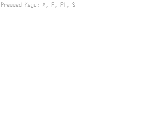
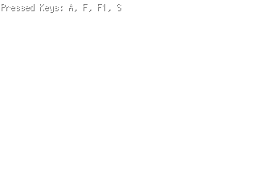
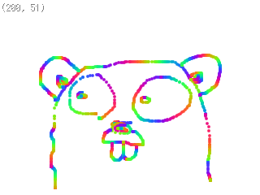
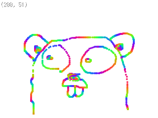

Ebiten (海老天)
v1.2.0-alpha
- A simple SNES-like 2D game library in Go
- Works on
- Web browsers (powered by GopherJS)
- Supported browsers: Chrome, Firefox, Safari on desktops
- Mac OS X
- Linux (maybe)
- Windows (possibly)
- API Docs
- GitHub project page (Development version: v1.2.0-alpha)
Features
- 2D Graphics
- Input (Mouse, Keyboard, Gamepad)
Example
 

 



Install on Mac OS X
:; go get github.com/hajimehoshi/ebiten
If you want to run your game on a web browser, execute this:
:; go get github.com/gopherjs/gopherjs
:; go get github.com/gopherjs/webgl
Execute the example
:; cd $GOPATH/src/github.com/hajimehoshi/ebiten/example
:; go run rotate/main.go
Run your game on a desktop
Just execute your Go program. That's it!
Run your game on a web browser
Compile your game with GopherJS:
:; gopherjs build -o yourgame.js path/to/yourgame
Then, open the below HTML on your HTTP server:
<!DOCTYPE html>
<script src="yourgame.js"></script>
NOTE: file:// URL may not work with Ebiten. Execute your game on a HTTP server.
Change Log
2015-??-??
- v1.2.0-rc1 released.
- Support for gamepads
- Support for touch events
- Added new functions for image rendering:
- Image.DrawFilledRect
- Image.DrawFilledRects
- Image.DrawLine
- Image.DrawLines
- Image.DrawRect
- Image.DrawRects
- Image.ReplacePixels
- Add some experimental packages:
- exp/audio: Play music and sound
- exp/gamepad: Useful functions to configure gamepads
- exp/shape: Draw ellipses and arcs
- These packages are experimental and we don't guarantee backward compatibility.
- Some bug fix
2015-01-25
2015-01-10
- v1.1.0-rc1 released.
- Support for web browsers: Ebiten now includes support for web browsers with GopherJS.
- Some API has changed:
- ImagePart is deprecated. Use ImageParts interface instead.
- ColorM.Element and GeoM.Element's recievers changed from structs to pointers.
- A lot of keyboard keys have been added. KeyMax and MouseButtonMax were removed.
- The game is stopped when the window is not active.
2015-01-04
- v1.0.0 released.
- Nothing has changed from v1.0.0-rc1.
2014-12-29
License
Ebiten
Copyright 2015 Hajime Hoshi
Licensed under the Apache License, Version 2.0 (the "License");
you may not use this file except in compliance with the License.
You may obtain a copy of the License at
http://www.apache.org/licenses/LICENSE-2.0
Unless required by applicable law or agreed to in writing, software
distributed under the License is distributed on an "AS IS" BASIS,
WITHOUT WARRANTIES OR CONDITIONS OF ANY KIND, either express or implied.
See the License for the specific language governing permissions and
limitations under the License.
Go Gopher photograph
The original photograph of Go gophers by Chris Nokleberg is licensed under the Creative Commons 3.0 Attributions license.